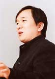

|
 ところで、ゲームではどのポケモンも鳴き声しか発しませんが、テレビアニメーションではニャースだけ人間語を話しています。あれはなぜなんでしょうか？ ところで、ゲームではどのポケモンも鳴き声しか発しませんが、テレビアニメーションではニャースだけ人間語を話しています。あれはなぜなんでしょうか？
 石原>> それはですねぇ(笑)、アニメ化に向けて田尻くんがポケモンの設定を作ったときに、それぞれの知性レベルを考えながら「こいつは人間の言語を理解するはずがない」とか「こいつは将来的にしゃべってもいいかな」とか、そういう全体の表を作って、人間の言葉をしゃべるとしたらコレとコレ、という風に決めたんだよね。 石原>> それはですねぇ(笑)、アニメ化に向けて田尻くんがポケモンの設定を作ったときに、それぞれの知性レベルを考えながら「こいつは人間の言語を理解するはずがない」とか「こいつは将来的にしゃべってもいいかな」とか、そういう全体の表を作って、人間の言葉をしゃべるとしたらコレとコレ、という風に決めたんだよね。
田尻>> だから、今後の展開次第ではニャース以外にも人間の言葉を話すやつが出てくる可能性は十分にあります。まぁ、アニメも僕が作るのであればもっとゲームに忠実なものになるんだろうけど、実際には専門のスタッフの方々が独自に作るわけですから、すべてをゲームに忠実なものとして作る必要はないんです。一種のパラレルワールドっていうか、ちょっとズレた世界でいい。
石原>> その場で積み重ねられていくクリエイティブってかなり重要で、とくにアニメなんかの場合では、現場の声優さんの力がすごく影響してます。たとえば、ピカチュウというのは大谷育江さんの力があったからこそあそこまで性格が形作られたわけだし、ロケット団なんかでも、林原めぐみさんという才能がその個性を引き出してくれているわけでね。ロケット団がやられたときに「やなカンジ〜！」って飛んでいくのは台本にはなかったけど、林原さんが絵を見ながらなんとなくつぶやいた言葉が「それ面白いから使おうよ！」ってことになって、それ以来、毎回ロケット団は「やなカンジ〜！」って言いながら飛んでいく。コラボレーションされたり、現場のノリによって作品が前へ進んだときにね、これは「いいチームだな」と思えるんです。
田尻>> 社会的には僕が『ポケットモンスター』の原作者ということになってますけど、ゲームソフトだってゲームフリークのスタッフが団結して作ったわけだし、ポケモンカードもアニメも僕がひとりでコントロールしているわけじゃなくて、それぞれ現場のクリエイターたちが、原作を中心にして作り上げたものですから、そういったことがもっときちんと伝わってくれれば『ポケットモンスター』の世界のありようもわかってもらえるかな、と。
石原>> アニメを作る前に、田尻くんは「とにかくゲームをやってください。ゲームをやって『ポケットモンスター』を理解したうえでアニメを作って欲しい」というようなことを言ったんだよね。ゲームをやってくれたのであれば、あとはゲームとは違うことをやっても、あえて変えているんだというのがわかりますから。
|
|
|